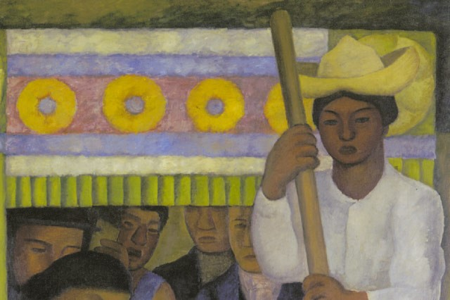
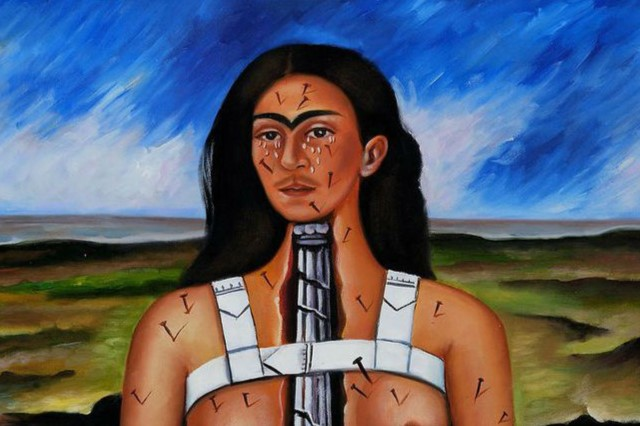
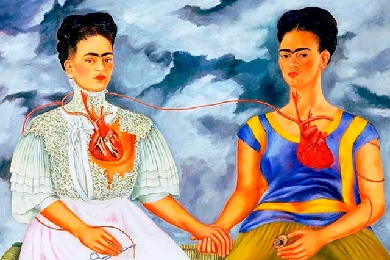
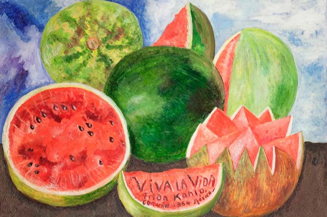
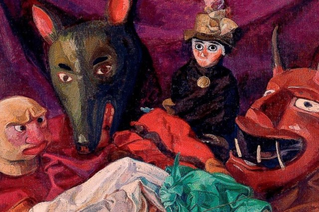
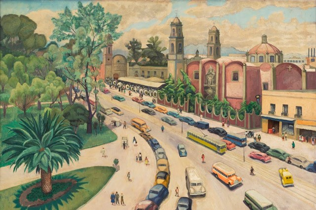
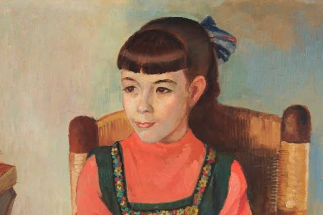

COLECCIONES
Colecciones: Explora la creatividad de nuestros artistas
Una selección de las obras más destacadas de nuestros artistas.
Diego Rivera, Frida Kahlo y Angelina Beloff, explora la riqueza y la diversidad de su arte.
ACERCA
OBRAS
El matemático 1919
"Pintura donde se muestra un hombre absorto en cálculos , reflejando la pasión por la matemática."
El niño del taco
"Pintura que muestra un niño sonriente con un taco en la mano, reflejando la alegría y la inocencia."

La canoa enflorada
"Pintura que muestra una canoa adornada con flores y hojas, reflejando la conexión con la "naturaleza."

La columna rota
"Pintura que muestra a Frida con una columna rota en lugar de la columna vertebral, reflejando su dolor y sufrimiento."

Las dos Fridas
"Pintura que muestra a dos Fridas sentadas juntas, una con un vestido europeo y la otra con un vestido tradicional mexicano."

Viva la vida
"Pintura que muestra a Frida rodeada de flores y frutas, reflejando con colores bibrantes su amor por la vida y la naturaleza."

Máscaras y muñecos
"Pintura que muestra una colección de máscaras y muñecos, reflejando la riqueza cultural mexicana."

La Avenida Hidalgo
"Pintura que muestra una vista de la Avenida Hidalgo, reflejando la vida cotidiana y la arquitectura colonial."

Retrato de Susana
"Pintura que muestra un retrato de la artista mexicana, reflejando su personalidad y esencia artística."
CURIOSIDADES
Dolores Olmedo, un lugar lleno de curiosidades
El Museo Dolores Olmedo es un espacio cultural que alberga varias curiosidades, como su casa del siglo XVI, una colección de xoloitzcuintles, un jardín con esculturas de artistas mexicanos, una biblioteca con libros y documentos de Dolores Olmedo, y una sala de murales de artistas mexicanos.
TESTIMONIOS
MUSEO DOLORES OLMEDO
Alberga la mayor colección de obras de Diego Rivera, Frida Khalo, Angelina Beloff y Pablo O’higgins así como arte prehispánico, novohispano y popular.
CONTACTO
- +52 55 5555 1221
- seducat@mdop.org.mx
- Dirección: Av. México 5843, La Noria, 16030 Xochimilco, CDMX